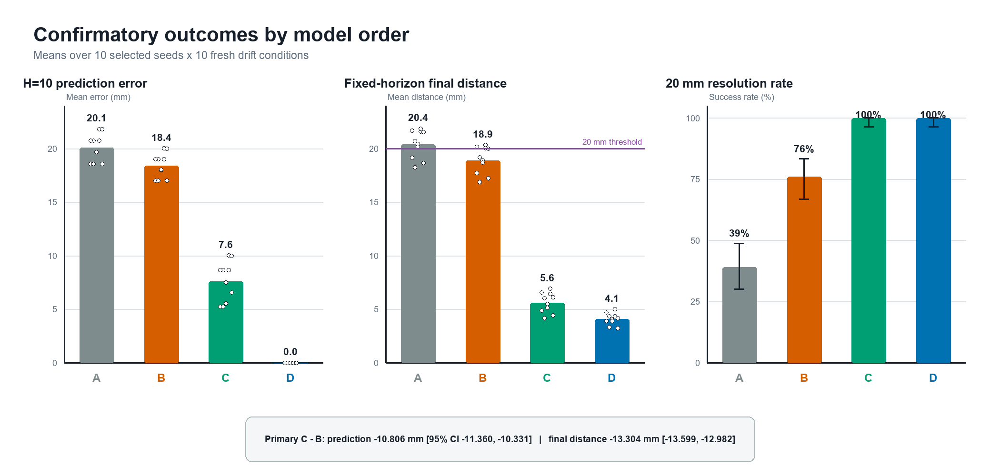

An embodied controller can fail because its parameters are wrong, or because its model is missing a state variable the dynamics actually depend on — this paper tests, in simulation, whether observed failure evidence can tell those two cases apart.
Central question
"When persistent, structured task failure survives the best repair available inside the current model class, does a prepared increase in model order improve prediction-linked control without nominal regression?"
Teaser

Approach

In an Isaac Sim surgical-reach environment, a zero-order target model is exposed to persistent drift on a shared Episode 1 trace, then repaired within its own model class. A preregistered adequacy gate asks whether the remaining residual is persistent, directional, and better explained by a prepared constant-velocity alternative. Episode 2 compares four arms — frozen zero order, repaired zero order, gated constant velocity, and a velocity oracle — while holding the Cartesian controller fixed across 10 fresh seeds × 10 fresh drift conditions, every seed-arm-condition cell in its own Isaac process.
Results
| Endpoint | Repaired zero order (B) | Gated constant velocity (C) | C − B |
|---|---|---|---|
| H=10 prediction error | 18.401 mm | 7.595 mm | −10.806 mm [−11.360, −10.331] |
| Fixed-horizon final distance | 18.905 mm | 5.601 mm | −13.304 mm [−13.599, −12.982] |
| 20 mm resolution rate | 76% | 100% | secondary |
| Static retention | 10/10 | 10/10 | non-inferior |

The adequacy gate fired on 100/100 persistent-drift trials and 0/100 each of static, observation-noise, and single-impulse controls — no missing cells, unexpected resets, or forbidden-region violations across the complete grid.

Claim boundary
More
Full method, related work, and reproduction instructions: docs/paper002/README.md. Program context and what comes next: Paper 003 — missing causal relation, capability-threshold expansion. NAMING.md — full program roadmap.